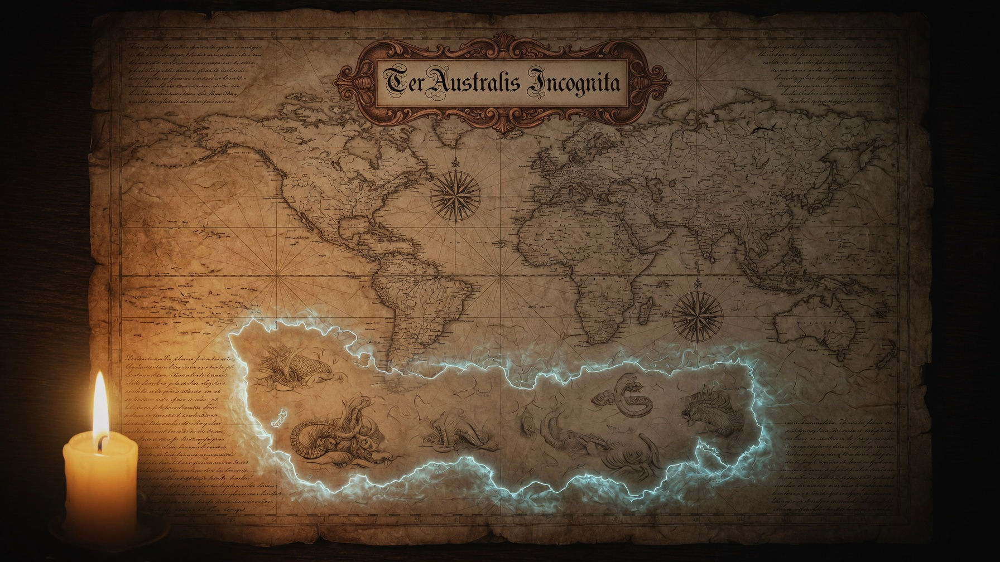

Concrete actions that follow from the Problems and First Principles.

Primary axis: Pilbara / Port Hedland
The industrial substrate exists. The question is deliberate orientation toward multiplanetary support.
CrystalCore is a local-first, consent-native intelligence layer designed for high latency, intermittent connectivity, and isolation:
This is the intelligence counterpart to geographic redundancy.
These constraints are architectural.
First: alignment of physics, geography, and architecture.